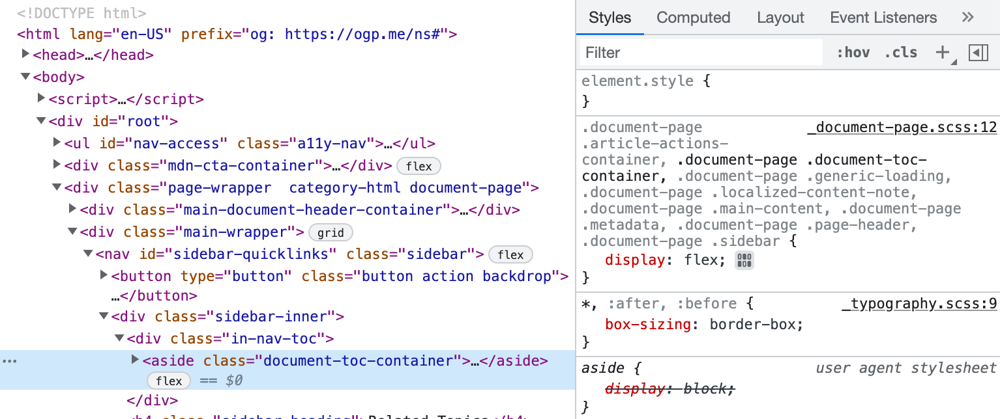
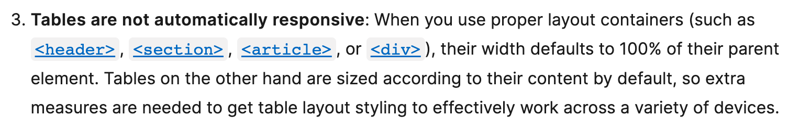

Why I use div,
<p>, <h1>, <span> and a few other things,
but not new HTML5 tags such as <section> and <article> and complicated tags such as <table>.
-
I don't need to think about which tag to use. Productivity ⬆️
-
I don't need to worry about heirarchies between the tags. Productivity ⬆️
-
I don't need to contemplate whether is this a <section> or not? Productivity ⬆️
-
I don't need to handle user agent stylesheet from different browsers when styling them. Headache ⬇️
- For example, I use <span> with some css instead of <code>, so that I don't need to worry about the user agent style sheet different browsers would have for <code>. I have confidence that they look the same across different browsers.
- This alone might not guarantee pixel perfect, but it's closer than using various tags.

Screenshot from MDN Elements page with Chrome inspector, showing the need to override display: block; with display: flex; for <aside> element.
-
I don't need to spend extra effort making <table> responsive. Productivity ⬆️

Screenshot from MDN Elements page for <table>
-
I build either really simple websites (like this one) or really complex web apps (100k LOC web app inside a custom webview). Both use cases don't require SEO.
Note: I am not encouraging people to use <div> instead of tags like <section> and <article>.
I am just outlining some benefits of using <div>. Also, if you care about accessibility, <div> might not be the best option.
Made by Zhu Liang, LinkedIn | GitHub